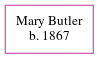

Mary Butler 1867 -
[ Home ] | [ Calendar ] | [ Surnames Index ] | [ Census Index ] | [ Family History ]Mary Butler was born in Llantwit, Glamorgan, Wales in 18671. In 1891, she was living in Neath Lower, Glamorgan, Wales1.
Citations
- 1891 Wales Census Online publication - Provo, UT, USA: The Generations Network, Inc., 2005.Original data - Census Returns of England and Wales, 1891. Kew, Surrey, England: The National Archives of the UK (TNA): Public Record Office (PRO), 1891. Data imaged from The National
Family Tree
Generated by ged2site. Last updated on Jun 6, 2024